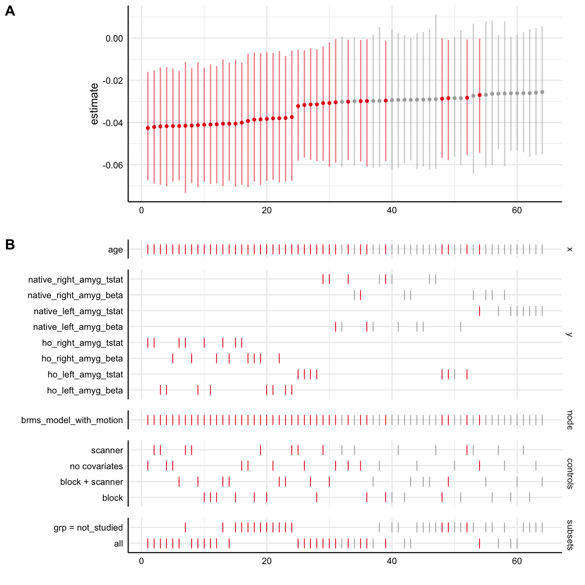

Into the (Bayesian) Multiverse!
Paul A. Bloom
0. Background
Welcome! This document serves 2 purposes:
- Provide a walkthough for anyone potentially interested in conducting multiverse analyses (or specification curves), especially when considering Bayesian models or fMRI data.
- Serve as documentation for analysis code for Bloom et al. 2021 with code that can be run using simulated data (i.e. fake data), since we cannot share the data publicly.
What is a multiverse anyway? What is a specification curve?
A multiverse analysis is an analytical tool that helps provide an understanding of whether study results hinge on decisions made during the analysis process. Briefly, a multiverse analysis means that one identifies a set of analyses methods that are all theoretically justified then conducts all of these analysis “specifications” in parallel. Then, a specification curve can be used for visualization of all of the different analysis specifications at once, as well as statistical inference.
The specification curve analyses here were particularly inspired by work from Dani Cosme and Amy Orben.
See more background on the statistics here and here.

specification curve for age-related change in fear > baseline amygdala-mPFC gPPI
In what situation should I run a multiverse analysis?
Multiverse analyses are particularly useful when there are decisions we have to make during the data preparation and analysis process where we aren’t sure what the “right” answer is. If we can think of different methods for cleaning, preprocessing, excluding, transforming, or modeling the data that are theoretically justifiable (but we don’t have a certain answer for which is ‘best’) multiverse analysis allows us to run all of these theoretically justifiable analyses at the same time. This allows us to look at 2 main questions:
- Do the results from differing, theoretically justifiable, versions of the analyses converge on a consistent finding?
- How do different choices we make as analysts of the data influence the results? Which decisions are most influential?
These analyses have been particularly useful with neuroimaging data where there are MANY decisions to be made where we don’t have consensus for an “optimal” method. However, multiverse analyses and specification curves equally useful in any topic of research where there are mutiple theoretically justifiable ways an analysis can be done.
Specification curve analysis steps
Simonsohn et al (2020) describe 3 steps for specifiction curve analyses:
- define the set of reasonable specifications to estimate
- estimate all specifications and report the results in a descriptive specification curve
- conduct joint statistical tests using an inferential specification curve.
Because the analyses presented here are considered exploratory, we aren’t going to cover the inferential procedudes in step #3. For more info on this step, see this great tutorial from Dani Cosme.
Note: simulated data here only!
Note: these data are fake! Under our Institutional Review Board protocol and for the purpose of creating participant identies private, we cannot share our actual data publicly. However, we’ve simulated an amygdala reactivity dataset for the purposes of creating a multiverse analysis where the code can actually be run! You can find the simulated data here
- Briefly, to create simulated data that decently approximates the real data without risk of identifying participants, we created a multivariate regression model using brms, then drew samples from the model’s posterior predictive distribution for fear > baseline amygdala reactivity estimates for each study timepoint for each real participant.
- We also scrambled the order of participant IDs and added noise to ages.
- So, the data here should do a reasonable job of mimicking the structure of some of the data analyzed in Bloom et al without compromising participant data privacy and security. Some of the relationships among variables may differ somewhat from the real data, however. For more on data synthesis for these purposes, check out the synthpop R package.
1. Read in the data
library(tidyverse)
library(specr)
library(brms)
library(cowplot)Here’s what is in each column:
id- participant ID, identifies a participant across timepointswave- the study timepoint (either1,2, or3)age- participant age at the given timepoint, in yearsblock- the temporal position of the task run relative to other tasks in the scanner (1= first,2= second,3= third)motion- head motion (mean framewise displacement), which has been z-scored herescanner- whether the data were collected on a first MRI scanner (1= timepoints 1 & 2) or a second (2= timepoint 3). Both were Siemens Tim Trioprev_studied- whether this scan was previously analyzed in similar work by Gee et al (2013).1indicates a scan was previously studied
All of the rest of the columns are measurements of amygdala reactivity to fear faces > baseline for each scan, labeled such that:
- columns with the
hoprefix are from amygdala ROIs defined by the Harvard-Oxford subcortical atlas,nativeprefix columns are in native space defined through Freesurfer - columns with the
rightprefix are the right amygdala, andleftare the left - columns with the
betaprefix denote raw beta estimates of amygdala reactivity magnitude, while thetstatprefix denote t-statistic measurements of amygdala reactivity scaled by estimation uncertainty (the standard error)
fake_data = readr::read_csv('simulated_amygdala_reactivity.csv')## Parsed with column specification:
## cols(
## id = col_double(),
## wave = col_double(),
## age = col_double(),
## block = col_double(),
## motion = col_double(),
## scanner = col_double(),
## prev_studied = col_double(),
## ho_right_amyg_beta = col_double(),
## ho_left_amyg_beta = col_double(),
## ho_right_amyg_tstat = col_double(),
## ho_left_amyg_tstat = col_double(),
## native_right_amyg_beta = col_double(),
## native_left_amyg_beta = col_double(),
## native_right_amyg_tstat = col_double(),
## native_left_amyg_tstat = col_double()
## )head(fake_data[,1:8])## # A tibble: 6 x 8
## id wave age block motion scanner prev_studied ho_right_amyg_beta
## <dbl> <dbl> <dbl> <dbl> <dbl> <dbl> <dbl> <dbl>
## 1 1 3 16.1 1 0.293 2 NA 0.785
## 2 2 1 15.2 3 0.08 1 1 0.375
## 3 2 2 17.3 1 -1.32 1 NA -0.168
## 4 2 3 19.4 1 0.063 2 NA -0.230
## 5 3 1 22.7 2 -0.986 1 NA 0.00908
## 6 7 1 5.83 1 1.18 1 NA -0.8172. Specification curve: specr version
specr is a great package with a lot of nice functionality for running specification curve analyses. This wasn’t the software we used for the main analyses (because it hadn’t yet been released yet), but it’s probably the most straightforward way to go for regression-based specification curve analyses.
2A Define all ‘reasonable’ specifictions
First, we’ll need to define what different ‘reasonable’ and theoretically justifiable ways there are for doing this analysis of age-related change in amygdala reactivity to fear faces > baseline. For the sake of this project, it isn’t computationally feasible to try ALL reasonable ways of doing this analysis, so we can think of this approach as attempting to sample from the space of possible analyses specifications.
- Covariates: it might make sense to adjust for factors like
scannerandblockin our group-level model, or different subsets of these. - Amygdala ROI: there are several justifiable ways of defining an ‘amygdala’ brain region, either using a “native space” mask generated through Freesurfer, or by using Harvard-Oxford amygdala estimates in standard space. We could also us right, left, or bilateral amygdala estimates
- Estimate type: Here we pull both from the
betaimages andtstatimages for 2 different amygdala reactivity estmates. Thebetais the contrast parameter estimate and represents the point estimate (beta estimate) of the regression coefficient. Thus, the thebetais the magnitude of the estimated relationship between the presence of the task stimuli and the BOLD signal. Thetstatrepresents the estimate scaled by the uncertainty (i.e. by the standard error of the estimate), and so it is a standardized effect size measure of the relationship between the presence of the task stimuli and the BOLD signal - Data inclusion: Some of the scans studied here were previously analyzed for age-related change in amygdala reactivity by Gee et al (2013).. So, to get an estimate more independent from the previous work, we might want to exclude these. However, we might have higher statistical power if we include all the available data.
First, a little data wrangling before modeling.
- We’ll create a variable called
grpto index whether scans were previously studied for age-related changes in amygdala reactivity in Gee et al. (2013). Thenot_studiedgroup here can be considered a more independent sample from the previous study. - We’ll also create a vector of the outcomes (different measures of amygdala reactivity)
fake_data = dplyr::mutate(fake_data, grp = ifelse(is.na(prev_studied), 'not_studied', 'prev_studied'))
outcomes = names(fake_data)[grepl('amyg', names(fake_data))]2B. Specify the custom model
Specr has a nice feature of allowing a custom model function. For more detailed info on this, see here.
Here, we set up a multilevel model using the lme4 package’s lmer() function to take advangate of varying intercepts for each participant (as denoted by the (1|id) syntax in the model formula). We also include a covariate for motion, because we want all models to include this covariate for head motion during the scan. We also need to load the lme4 and broom.mixed packages inside the custom model function so that specr can use them to run the model and parse the results.
lmer_model_with_motion <- function(formula, data,...) {
require(lme4)
require(broom.mixed)
# set up the model base formula (basically specr will past all other model info in here)
formula <- paste(formula, "+ motion + (1|id)")
lme4::lmer(formula, data)
}2C. Run all model specifications with run_specs()
How does this run_specs() function work?
df=fake_data: specifies the data frame to fit the model tox = 'age': the ‘x’ variable, or predictor of interest in the model. You can have multiple x variables if you want by specificying a vector with multiple values herey = outcomes: here we specify a vector of multiple outcome variables, the 8 different measures of amygdala reactivitycontrols = c('block', 'scanner'): covariates to include in the model.model = 'lmer_model_with_motion': specifies the custom model. If you don’t need a custom model, there are also defaults, like"lm"to run OLS regressionsubsets = list(grp = 'not_studied'): subsets of the data to run the model on, expressed as a list. Here, we want to run the model specifically on thenot_studiedgroup, in addition to the full dataset.- Because we have
all.comb=TRUE, this will run specifications with all possible combinations of covariates. Otherwise, it will run models with no covariates, each single covariate, and then all together. Note: random slopes are not included for these covariates by default unless we add this to the custom model
Here, 8 outcomes X 4 possible covariate specifications X 2 subsets = 64 total specifications in our multiverse
specs = specr::run_specs(df = fake_data,
x = 'age', y = outcomes,
controls = c('block', 'scanner'),
model = 'lmer_model_with_motion',
subsets = list(grp = 'not_studied'),
all.comb = TRUE)2D. Check out results summaries across all models
The output of run_specs() is a data frame with each row representing one specification from the multiverse analysis we have just run. The x, y, model, controls and subsets columns give us information on the setup of each model, then we get a variety of statistical outputs from the fit models. Because we have 64 specifications here, the dataframe is 64 rows.
estimate: the beta estimate in the regression model for the givenxterm of interest (or the ‘slope’ for a continuous predictor). Here, these beta estimates represent estimates for age-related change in amygdala reactivity, such that negative estimates indicate age-related decreases in amygdala reactivity.std.error: The standard error about the beta estimatestatistic: The t-statistic for the beta estimateconf.low: The lower bound of the 95% confidence interval for the beta estimateconf.high: The upper bound of the 95% confidence interval for the beta estimate- all of the
fit_columns provide information on the goodness-of-fit of the model more generally (i.e. log likelihood, AIC, BIC), as well as the residual degrees of freedom.
specs## # A tibble: 64 x 18
## x y model controls effect group estimate std.error statistic conf.low
## <chr> <chr> <chr> <chr> <chr> <chr> <dbl> <dbl> <dbl> <dbl>
## 1 age ho_r… lmer… block fixed <NA> -0.0416 0.0145 -2.87 -0.0700
## 2 age ho_l… lmer… block fixed <NA> -0.0390 0.0146 -2.67 -0.0677
## 3 age ho_r… lmer… block fixed <NA> -0.0423 0.0142 -2.97 -0.0702
## 4 age ho_l… lmer… block fixed <NA> -0.0298 0.0135 -2.21 -0.0562
## 5 age nati… lmer… block fixed <NA> -0.0313 0.0159 -1.97 -0.0624
## 6 age nati… lmer… block fixed <NA> -0.0303 0.0156 -1.94 -0.0609
## 7 age nati… lmer… block fixed <NA> -0.0318 0.0157 -2.03 -0.0624
## 8 age nati… lmer… block fixed <NA> -0.0269 0.0142 -1.89 -0.0548
## 9 age ho_r… lmer… scanner fixed <NA> -0.0405 0.0146 -2.78 -0.0690
## 10 age ho_l… lmer… scanner fixed <NA> -0.0386 0.0147 -2.63 -0.0674
## # … with 54 more rows, and 8 more variables: conf.high <dbl>, fit_sigma <dbl>,
## # fit_logLik <dbl>, fit_AIC <dbl>, fit_BIC <dbl>, fit_REMLcrit <dbl>,
## # fit_df.residual <int>, subsets <chr>2E. Plot the specification curve
specr::plot_specs(specs)
This type of plot can be overwhelming at first because it shows us a lot of information, but it is really helpful for looking at several different things!
- Panel A shows us the regression beta estimates for our
xpredictor (plus 95% confidence intervals) for all of our specifications. Specifications are ordered from least to greatest, and colored such that red indicates a significant negative association, gray indicates a nonsignificant association, and blue (not shown on this plot) indicates a significant positive association. So, here, the majority of the specifications indicate a significant negative estimate (under \(\alpha=0.05\), such that the 95% confidence interval excludes 0), suggesting a negative relationship here between age and amygdala reactivity. Here, we can see that the point estimates of all the models are negative, indicating that all the models agreed on the direction of age-related change, if not the significance. - Panel B shows us the details for each specification, keeping the coloring schema from Panel A based on estimate direction/significance. So, looking vertically across the both panels tells us specifics about a single model specification. On any given line, a dash (
|) indicates that the choice marked on the left was made, where a blank space it wasn’t made.- The top section
ageindicates that that thexvariable (the term being examined) in all models wasage. - In the
ysection below that, dashes on a given line indicate whatyvariable for amygdala reactivity was used in a given specification (note that different choices foryare mutually exclusive). - The
modelsection indicates that thelmer_model_with_motionwas the model used in all specifications here. - The
controlssection shows which covariates were used in each specification, although we should remember here that ALL models had a covariate for head motion built into them (sono covariatesreally means no covariates other than head motion) - The bottom section
subsetsindicaates which subset of the data the model was run on, eitherall, or just thenot_studiedgroup.
- The top section
- So, what is Panel B telling us practically? We can see how estimates term of interest differ as a function of different model specification decision points! In general, if specifications tend to show up towards the left side of the graph, this means that the specifications resulted in more negative beta estimates (more negative age-related change in amygdala reactivity here), while specifications that tend to show up towards the right side of the graph tended to result in more positive beta estimates. Most specifically, we can see that here in the simulated data:
- Specifications with
ho_right_amyg_tstator `ho_right_amyg_betaas theyvariable tended to result in the most strongly negative estimates compared to the others (they show up towards the left side) - Specifications with
native_left_amyg_tstatas theyvariable tended to result in the most strongly positive estimates compared to the others (they show up towards the right side)
- Specifications with
2F. View the multiverse decision tree
specr also gives us a nice plot_decisiontree() function for summarizing what our specifications are, and how many of them there are
specr::plot_decisiontree(specs, legend = TRUE)
3. A bayesian specification curve with specr and brms
For many analyses, we might want to use Bayesian estimation for models in our specification curve, particularly if we are getting convergence issues or singular fits with lmer. In this cases, lmer will refuse to let us fit a fully specified longitudinal model with varying terms (slopes) for age for each participant because of the high number of model parameters relative to data points. However, the brms R package can fit these models with nearly identical syntax to lmer using Stan for fully Bayesian estimation under the hood (note: the high number of parameters relative to the number of observations is definitely still a problem, but with Bayesian estimation we can at least fit the model and quantify uncertainty for each parameter).
While they have many advantages, the main drawback to Bayesian models it that they take longer to fit and require more RAM than do frequentist models.
- When fitting these yourself, you may want to plan to run 1 model first to get an approximate timing estimate before you run a Bayesian specification curve.
- If available, servers or computing clusters (especially if you can parallelize across specifications) can vastly speed up Bayesian specification curve analyses.
3A. Define a custom brms model with participant-varying age terms
The brm() function from the brms package fits models using Bayesian estimation using mostly the same syntax as lme4 models. Here, we set up a custom model function, making sure to include (age|id) to allow age terms to vary for each participant. Also, inside the call to fit the model, we’ll add cores=4 to parallelize running of each model across 4 cores. Most laptops have 4-8 cores, so this should work on most computers, and should speed up each model by a factor of about 4.
brms_model_with_motion <- function(formula, data,...) {
require(brms)
require(broom.mixed)
# set up the model base formula (basically specr will past all other model info in here)
formula <- paste(formula, "+ motion + (age|id)")
brms::brm(formula, data, cores = 4)
}3B. Run all Bayesian model specifications with run_specs()
We’ll run the equivalent specifications to the previous curve, only now with model = 'brms_model_with_motion' for our custom brms model
brms_specs = specr::run_specs(df = fake_data,
x = 'age', y = outcomes,
controls = c('block', 'scanner'),
model = 'brms_model_with_motion',
subsets = list(grp = 'not_studied'),
all.comb = TRUE)3C. Check out Bayesian model summaries
The summary here is quite similar to when we used the lme4 model, only now the estimate is the median estimate for the x term (age) across posterior samples, and conf.low and conf.high represent the bounds of the 95% posterior interval.
brms_specs## # A tibble: 64 x 15
## x y model controls effect component group estimate std.error conf.low
## <chr> <chr> <chr> <chr> <chr> <chr> <chr> <dbl> <dbl> <dbl>
## 1 age ho_r… brms… block fixed cond <NA> -0.0390 0.0159 -0.0691
## 2 age ho_l… brms… block fixed cond <NA> -0.0380 0.0154 -0.0677
## 3 age ho_r… brms… block fixed cond <NA> -0.0411 0.0150 -0.0705
## 4 age ho_l… brms… block fixed cond <NA> -0.0281 0.0144 -0.0552
## 5 age nati… brms… block fixed cond <NA> -0.0269 0.0174 -0.0607
## 6 age nati… brms… block fixed cond <NA> -0.0297 0.0165 -0.0624
## 7 age nati… brms… block fixed cond <NA> -0.0302 0.0171 -0.0628
## 8 age nati… brms… block fixed cond <NA> -0.0261 0.0153 -0.0561
## 9 age ho_r… brms… scanner fixed cond <NA> -0.0384 0.0157 -0.0685
## 10 age ho_l… brms… scanner fixed cond <NA> -0.0384 0.0152 -0.0664
## # … with 54 more rows, and 5 more variables: conf.high <dbl>,
## # fit_algorithm <chr>, fit_pss <dbl>, fit_nobs <int>, subsets <chr>3D. Plot Bayesian specification curve
With the Bayesian models including participant-varying age terms, results are largely similar to before. The main difference is that a slightly larger proportion of the 95% posterior intervals overlap with 0 than with the previous models without participant-varying age terms.
specr::plot_specs(brms_specs)3E. Plot specification curve with brms and lme4 models together
We can also bind the two output data frames with all the specifications we’ve already fit together, then plot a curve across all of them to more directly compare the models. Now, in the models section of Panel B in the plot, we can tell whether the model used for each specification was the lme4 one (lmer_model_with_motion) or the brms one (brms_model_with_motion)
# columns are slightly different depending on the model type, so use rbind.fill() to deal with this
all_specs = plyr::rbind.fill(specs, brms_specs)
specr::plot_specs(all_specs)
4. Bayesian specification curves using custom code
specr is a super useful tool, but when we were first running specification curve analyses, the package hadn’t been released yet. For the analyses in the manuscript, we used mostly functions from the tidyverse, especially the purrr package for dealing with nesting data, for estimation of many Bayesian models within multiverse analyses.
While the methods we used required writing more lines of code, one very helpful thing that specr doesn’t do automatically is do is to save the fitted model object for each specification. Storing the fitted model objects will allow us to do a few useful things:
- Extract fitted model predictions (i.e. ‘predicting the regression line’) for each model within a specification curve. In this case, we might want to be able to plot each model’s predictions for amygdala reactivity as a function of age.
- Perform checks, such as posterior predictive checks, or Q-Q plots on individual models
4A Convert the data to long format
Here, we use tidyr::pivot_longer() to reshape the data into long form, such that all amygdala reactivity estimates are in 1 column called amygdala_reactivity, with a variable called amygdala_measure indicating which amygdala reactivity measure it is.
fake_data_long = fake_data %>%
tidyr::pivot_longer(contains('amyg'), names_to = 'amygdala_measure', values_to = 'amygdala_reactivity')
head(fake_data_long)## # A tibble: 6 x 10
## id wave age block motion scanner prev_studied grp amygdala_measure
## <dbl> <dbl> <dbl> <dbl> <dbl> <dbl> <dbl> <chr> <chr>
## 1 1 3 16.1 1 0.293 2 NA not_st… ho_right_amyg_beta
## 2 1 3 16.1 1 0.293 2 NA not_st… ho_left_amyg_beta
## 3 1 3 16.1 1 0.293 2 NA not_st… ho_right_amyg_tst…
## 4 1 3 16.1 1 0.293 2 NA not_st… ho_left_amyg_tstat
## 5 1 3 16.1 1 0.293 2 NA not_st… native_right_amyg…
## 6 1 3 16.1 1 0.293 2 NA not_st… native_left_amyg_…
## # … with 1 more variable: amygdala_reactivity <dbl>4B Nest the data within each amygdala measure
In this step, we first group the data by amygdala_measure, then use tidyr::nest() to collapse the data within each amygdala measure into a single cell containing a tibble object(basically a fancy dataframe). Now, our dataset has only 8 rows, with the data column containing an entire dataset for each amygdala measure in each cell. We also add an index variable to keep track of the data shape here.
fake_data_nested = fake_data_long %>%
dplyr::group_by(amygdala_measure) %>%
tidyr::nest() %>%
dplyr::ungroup() %>%
dplyr::mutate(., index = 1:nrow(.))
fake_data_nested## # A tibble: 8 x 3
## amygdala_measure data index
## <chr> <list> <int>
## 1 ho_right_amyg_beta <tibble [178 × 9]> 1
## 2 ho_left_amyg_beta <tibble [178 × 9]> 2
## 3 ho_right_amyg_tstat <tibble [178 × 9]> 3
## 4 ho_left_amyg_tstat <tibble [178 × 9]> 4
## 5 native_right_amyg_beta <tibble [178 × 9]> 5
## 6 native_left_amyg_beta <tibble [178 × 9]> 6
## 7 native_right_amyg_tstat <tibble [178 × 9]> 7
## 8 native_left_amyg_tstat <tibble [178 × 9]> 8nested_model_frame = fake_data_nested %>%
dplyr::group_by(amygdala_measure) %>%
dplyr::mutate(., model_varying_slopes = purrr::map(data, ~brms::brm(amygdala_reactivity ~ age + motion + (age|id),
data = ., cores = 4, chains = 4)),
model_varying_intercepts = purrr::map(data, ~brms::brm(amygdala_reactivity ~ age + motion + (1|id),
data = ., cores = 4, chains = 4))) %>%
tidyr::pivot_longer(contains('model'), names_to = 'model_type', values_to = 'model_object')purrr_specs = nested_model_frame %>%
mutate(., coefs = map(model_object, ~broom.mixed::tidy(.))) %>%
dplyr::select(., -data, -model_object) %>%
unnest(coefs)## Warning: Problem with `mutate()` input `coefs`.
## ℹ `data_frame()` was deprecated in tibble 1.1.0.
## Please use `tibble()` instead.
## This warning is displayed once every 8 hours.
## Call `lifecycle::last_warnings()` to see where this warning was generated.
## ℹ Input `coefs` is `map(model_object, ~broom.mixed::tidy(.))`.
## ℹ The error occurred in group 1: amygdala_measure = "ho_left_amyg_beta".purrr_specs_age = dplyr::filter(purrr_specs, term == 'age')Custom SCA Plot Function
make_sca_plot = function(coefs, fork_list, plot_title, y_label, term_choice){
sca_decision_frame = coefs %>%
ungroup %>%
dplyr::filter(term == term_choice) %>%
dplyr::arrange(estimate) %>%
mutate(., rank = 1:nrow(.),
tstat = ifelse(grepl('tstat', amygdala_measure), '|', NA),
random_slopes = ifelse(grepl('intercepts', model_type), '|', NA),
amyg_right = ifelse(grepl('right', tolower(amygdala_measure)), '|', NA),
amyg_left = ifelse(grepl('left', tolower(amygdala_measure)), '|', NA),
native_space = ifelse(grepl('native', amygdala_measure), '|', NA),
overlap_0 = case_when(
conf.low < 0 & conf.high < 0 ~ 'neg_y',
conf.low < 0 & estimate < 0 & conf.high > 0 ~ 'neg_n',
conf.low < 0 & estimate > 0 & conf.high > 0 ~ 'pos_n',
conf.low > 0 & conf.high > 0 ~ 'pos_y',
))
# median model
median_model_frame = sca_decision_frame %>%
summarise(estimate = median(estimate), conf.low = median(conf.low), conf.high = median(conf.high), rank= median(rank))
sca_decision_frame$overlap_0 = factor(sca_decision_frame$overlap_0, levels = c("neg_y", "neg_n", "pos_n", "pos_y"))
# convert to long, assign decition types
sca_decision_frame_long = sca_decision_frame %>%
tidyr::pivot_longer(names_to = 'fork', values_to = 'choice', all_of(fork_list)) %>%
mutate(decisiontype = case_when(
grepl('amyg', fork) ~ 'Amygdala\n Roi',
fork == 'native_space' ~ 'Amygdala\n Roi',
fork %in% c('random_slopes', 'model_type') ~ 'Group-Level\nModel',
fork %in% c('tstat') ~ 'Subject-Level\nModel'
))
# get average rank of each amygdala_measure by beta estimate
sca_decision_frame_long_ranks = sca_decision_frame_long %>%
dplyr::filter(choice == '|') %>%
dplyr::group_by(fork) %>%
summarise(mean_rank = -1*mean(rank))
# join ranks with decision frame
sca_decision_frame_long = left_join(sca_decision_frame_long, sca_decision_frame_long_ranks)
# rename variables to be human-interpretable
sca_decision_frame_long$fork = dplyr::recode(sca_decision_frame_long$fork,
'tstat' = 'use tstats (vs. beta estimates)',
'native_space' = 'native space (vs. mni space)',
'model_type' = 'random intercepts only (vs. random slopes)',
'amyg_right' = 'right amygdala',
'amyg_left' = 'left amygdala')
# reorder forks by mean rank
sca_decision_frame_long$fork_ordered = reorder(sca_decision_frame_long$fork, sca_decision_frame_long$mean_rank)
# color palette to code the following:
# blue = negative, distinct from 0
# red = negative, not distinct from 0
# green = positive, not distinct from 0
# purple = positive, distinct from 0
if('neg_y' %in% sca_decision_frame$overlap_0){
my_colors <- RColorBrewer::brewer.pal(4, "Set1")[1:4]
}else if('neg_n' %in% sca_decision_frame$overlap_0){
my_colors <- RColorBrewer::brewer.pal(4, "Set1")[2:4]
}else if('pos_n' %in% sca_decision_frame$overlap_0){
my_colors <- RColorBrewer::brewer.pal(4, "Set1")[3:4]
}else{
my_colors <- RColorBrewer::brewer.pal(4, "Set1")[4:4]
}
# recode overlap 0 markings for informative legend
sca_decision_frame$overlap_0 = dplyr::recode(sca_decision_frame$overlap_0,
'neg_y' = '-, 95% PI excluding 0',
'neg_n' = '-, 95% PI including 0',
'pos_n' = '+, 95% PI including 0',
'pos_y' = '+, 95% PI excluding 0')
# summary for lower plot (median + IQR)
decision_summary = sca_decision_frame_long %>%
group_by(decisiontype, choice, fork, fork_ordered) %>%
summarise(n = n(), median_rank = median(rank), lwr_rank = quantile(rank, .25), upr_rank = quantile(rank, .75)) %>%
dplyr::filter(choice =='|')
# top panel
sca_top = ggplot(sca_decision_frame, aes(x = rank, y = estimate, color = overlap_0)) +
geom_hline(yintercept = 0, lty = 1, color = 'black') +
geom_hline(yintercept = median(sca_decision_frame$estimate), color = 'black', lty = 2) +
geom_point(alpha = .5) +
geom_errorbar(aes(ymin = conf.low, ymax = conf.high), width = 0, lwd = .15, alpha = .5) +
geom_point(data = median_model_frame,aes(x = rank, y = estimate), color = 'black') +
geom_errorbar(data = median_model_frame,aes(x = rank, y = estimate, ymin = conf.low, ymax = conf.high), color = 'black') +
labs(x = '', y = y_label, title = plot_title) +
theme_classic() +
theme(legend.position = 'top', legend.title = element_blank()) +
scale_color_manual(values = my_colors)
# lower panel
sca_bottom = ggplot(sca_decision_frame_long, aes(x = rank, y = fork_ordered, color = overlap_0)) +
geom_text(aes(label = choice), alpha = .4) +
labs(x = "Analysis specifications ranked by beta estimates", y = "Decision Points") +
theme_bw() +
theme(legend.title = element_text(size = 10),
legend.text = element_text(size = 8),
axis.text = element_text(color = "black", size = 8),
legend.position = "none",
panel.grid.major = element_blank(),
panel.grid.minor = element_blank(),
panel.background = element_blank(),
strip.text.y = element_text(size = 8)) +
scale_color_manual(values = my_colors) +
facet_grid(rows = vars(decisiontype), drop = TRUE, scales = 'free_y', space = 'free_y') +
geom_point(data = decision_summary, aes(x = median_rank, y = fork_ordered), color = 'black') +
geom_errorbarh(data = decision_summary, aes(x = median_rank, y = fork_ordered, xmin = lwr_rank, xmax = upr_rank), color = 'black')
# put together using cowplot
sca_panel = cowplot::plot_grid(sca_top, sca_bottom, ncol = 1, align = "v", axis = 'lr', labels = c('A', 'B'))
# return a list including formatted data, as well as plots
return(list('sca_decision_frame' = sca_decision_frame,
'sca_decision_frame_long' = sca_decision_frame_long,
'sca_top' = sca_top,
'sca_bottom' = sca_bottom,
'sca_panel' = sca_panel))
}Custom Spec Curve Plot
a = make_sca_plot(coefs = purrr_specs, fork_list = c('tstat', 'random_slopes', 'amyg_right', 'amyg_left', 'native_space'),
y_label = 'Age-related change in amygdaala reactivity\nFear > Neutral Faces', term_choice = 'age',
plot_title = 'Custom plot for simulated data spec curve')## Joining, by = "fork"## `summarise()` has grouped output by 'decisiontype', 'choice', 'fork'. You can override using the `.groups` argument.## Warning: Ignoring unknown aesthetics: x## Warning: Removed 40 rows containing missing values (geom_text).a$sca_panelGet fitted model predictions from custom multiverse
pred_grid = expand.grid(age = 4:22, motion = 0)
purrr_specs_preds = nested_model_frame %>%
dplyr::mutate(model_preds = purrr::map(model_object, ~stats::fitted(., newdata = pred_grid, re_formula = NA) %>%
cbind(pred_grid, .))) %>%
dplyr::select(-data, -model_object) %>%
unnest(model_preds)
head(purrr_specs_preds)## # A tibble: 6 x 9
## # Groups: amygdala_measure [1]
## amygdala_measure index model_type age motion Estimate Est.Error Q2.5 Q97.5
## <chr> <int> <chr> <int> <dbl> <dbl> <dbl> <dbl> <dbl>
## 1 ho_right_amyg_be… 1 model_var… 4 0 0.938 0.128 0.683 1.18
## 2 ho_right_amyg_be… 1 model_var… 5 0 0.896 0.116 0.667 1.12
## 3 ho_right_amyg_be… 1 model_var… 6 0 0.855 0.104 0.649 1.05
## 4 ho_right_amyg_be… 1 model_var… 7 0 0.813 0.0927 0.625 0.992
## 5 ho_right_amyg_be… 1 model_var… 8 0 0.772 0.0824 0.602 0.932
## 6 ho_right_amyg_be… 1 model_var… 9 0 0.731 0.0734 0.579 0.874Spaghetti plot of model predictions across specifications
ggplot(data = purrr_specs_preds, aes(x = age, y = Estimate,
group = interaction(amygdala_measure, model_type), color = model_type)) +
geom_line()Graphical posterior predictive checks
brms::pp_check(nested_model_frame$model_object[[1]], nsamples = 1)pp_check_grid = nested_model_frame %>%
dplyr::mutate(chex = purrr::map(model_object, ~brms::pp_check(., nsamples = 2)))
nested_model_frame = mutate(nested_model_frame,
spec = paste0(amygdala_measure, ', ', model_type))
print(nested_model_frame$spec)## [1] "ho_right_amyg_beta, model_varying_slopes"
## [2] "ho_right_amyg_beta, model_varying_intercepts"
## [3] "ho_left_amyg_beta, model_varying_slopes"
## [4] "ho_left_amyg_beta, model_varying_intercepts"
## [5] "ho_right_amyg_tstat, model_varying_slopes"
## [6] "ho_right_amyg_tstat, model_varying_intercepts"
## [7] "ho_left_amyg_tstat, model_varying_slopes"
## [8] "ho_left_amyg_tstat, model_varying_intercepts"
## [9] "native_right_amyg_beta, model_varying_slopes"
## [10] "native_right_amyg_beta, model_varying_intercepts"
## [11] "native_left_amyg_beta, model_varying_slopes"
## [12] "native_left_amyg_beta, model_varying_intercepts"
## [13] "native_right_amyg_tstat, model_varying_slopes"
## [14] "native_right_amyg_tstat, model_varying_intercepts"
## [15] "native_left_amyg_tstat, model_varying_slopes"
## [16] "native_left_amyg_tstat, model_varying_intercepts"f = cowplot::plot_grid(plotlist = (pp_check_grid$chex), labels = as.vector(nested_model_frame$spec))
f